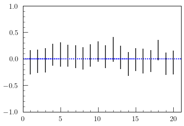

2022/02/26 21:13
この5日間，数物セミナー合同合宿に参加していた． 長くなるので， 別ページ にまとめることにする．
2022/02/20 22:15
昨日帰省した．
今日は親父がおいしいフランスの赤ワインを買ってきてくれて，晩酌． それはいいのだが，数物セミナーの準備が終わらない．
2022/02/19 00:37
昨晩はhさんに最近勉強したらしい正規行列の話をしてもらった．こういう交流は非常に楽しいので，好きである． 佐武さんの線形代数の本を読んだらしい． 正規行列といえば，対角化可能性の必要十分条件で，\(A\) と\(A^{*}\)が可換であることが効いているなど． もう一つ，正規行列のとくに実対称行列の標準化という話もしてくれた． これは知らなかったので，非常に勉強になった． 標準形は $$ \begin{pmatrix} a_1 & 0 & & &\cdots & & &0\\ 0 & \ddots& & & & & &\\ & & a_r & & & & & &\\ & & &x_1 &y_1 & & & \\ \vdots& & & -y_1&x_1 & & &\vdots \\ & & & & &\ddots & & \\ & & & & & &x_s&y_s \\ 0& & & \cdots& & &-y_s & x_s \end{pmatrix} $$ というもの．\(a_1, \ldots, a_r, x_1, \ldots, x_s, y_1, \ldots, y_s \in \mathbb{R}\). である． これのモチベーションとしては ，実対称行列は実の範囲では上手く対角化できないが， 実の範囲でどこまで綺麗にできるか，という問の答えである． hさんがこれを勉強した理由は別にあって， 直交行列の場合は，固有値が絶対値1になるという成約があり $$ \begin{pmatrix} 1 & 0 & & & & &\cdots & & & &0\\ 0 & \ddots& & & & & & & & &\\ & & 1 & & & & & & & & &\\ & & & -1 & & & & & & &\\ & & & & \ddots & & & & &\\ & & & & & -1 & & & & \\ & & & & & &\cos\theta_1 &\sin\theta_1 & & & \\ \vdots& & & & & & -\sin\theta_1&\cos\theta_1 & & &\vdots \\ & & & & & & & &\ddots & & \\ & & & & & & & & &\cos\theta_s&\sin\theta_s \\ 0& & & & & \cdots& & & &-\sin\theta_s & \cos\theta_s \end{pmatrix} = \begin{pmatrix} E_t & 0 & & & 0\\ 0 & -E_{r-t} & & &\\ & & R(-\theta_1) & &\\ & & & \ddots & 0\\ 0 & & & 0 &R(-\theta_s) \end{pmatrix} $$ となることから，\(\mathrm{SO}(n)\)が連結であることを 示せるらしい．具体的に\(E\)と\(T\)を結ぶ道を $$ f(t) = \begin{pmatrix} E_t & 0 & & & 0\\ 0 & -E_{r-t} & & &\\ & & R(-\theta_1t) & &\\ & & & \ddots & 0\\ 0 & & & 0 &R(-\theta_st) \end{pmatrix} $$ とすればよいらしい． さらに幾何学的な解釈もできることをiさんが教えてくれて， 任意の次元の回転が二次元の回転に分解される，ということ．別の言い方で言えば軸を指定できる，ということ．
今日は，のんびり部屋の掃除をするなど．
2022/02/16 01:20
量子理想気体のchemicalポテンシャルを考えた． 量子理想気体はgrand canonical分布で考えるのが標準なので， まずchemical potentialは逆温度とともにパラメータとして与える． そのあと，粒子数密度の期待値を出して，それがマクロな粒子数密度と一致する として，粒子数密度を制御する設定に移り，chemical potentialについて 逆に解くことでchemical potentialを得る．
古典の場合はやるだけ．Fermionの場合は低温の振る舞いは，低温展開すると \(\epsilon_{\text{F}}\)から\(T^2\)に比例して落ちる． この導出で\(T^2\)の出どころを見失いがち．変数変換したときに， いい感じに\(\beta^{-2}\)がでてくる． BosonはBEC critical templature以下ではゼロにべったりくっついている．
今日はPythonの課題をのんびり．こんなに時間かけるつもりではなかったのだが． Laguerre多項式が出てきて，明日から量子力学をやろうと思った． もう数物まで一週間ないのか．
2022/02/14 01:10
数日前からk大のレポート提出場所がメンテナンスで使えなくて， 今日締め切りだった課題を夜出した．
夜はQFTの入門を聞いた．csさんは数学よりで，自分の興味と似ているので， とても面白かった．解析側の数理物理の人が来ていて，ゲージ理論の数学的 な話題を「数学的」ということに，それは「幾何的」では，と突っ込んでいたのが 個人的に面白かった．
今日は統計力学を勉強していてLaplaceの方法がえらいという気持ちになった． よく出てくる\(\int_{a}^{b}dxe^{Vx}\)の積分を評価する方法． 練習問題として，Gamma関数の積分からStiringの公式ができる．
2022/02/13 00:59
統計のレポートの２つ目を終わらせた． 内容は大したことをやっていなくて，新しい統計学の教科書のデータを 取ってきて，区間推定をやった． それと，適当に標準正規母集団をつくって，サンプルごとに区間推定をしたもの のプロットをやってみるなど． 信頼度95%でやったので20個中1個くらいは母平均から外れる．

この課題はJupyter notebookでやってpdfに変換して提出しようと思ったが，
これに意外と手間取った．
まず，Jupyter notebookのeditからauthorとtitleを設定して，
.texでダウンロードする．
これのdomumentclassを
\documentclass[xelatex, ja=standard]{bxjsarticle}
に変更してxelatexでコンパイルすると，それなりにできる．
夜はspmの会議に出て，寝る．
2022/02/12 01:20
Beta関数をGamma関数であらわすしき \(\mathrm{B}(x, y) = \Gamma(x)\Gamma(y)/ \Gamma(x + y)\) を導出．これ見てるお前，できるか？
今日もyさんと喋ってbibtexの導入をお手伝いした． Windowsはbashrcがないので，PATHを通すのが大変だ．
BECのあたりを勉強していたが， \(g(x) = \int_{0}^{\infty} \frac{u^{1/2}}{e^{u}e^{-x} - 1} \) の積分のプロットが上手くできなかった．このあたり，理解ができていないので明日もやろう．
夜はもう少し勉強しようかと思っていたが，数物系コミュニティーで kさんから面白い話が聞けた．kさんは天体物理から量子情報， 量子アニーリングをされている方で，量子誤り訂正にトポロジー的なことや 量子アニーリングにイジングモデルの技術が使われることなど． 古典だと多数の方に合わせてエラーのbitをflipするという話をきいて，量子だとこういう理由でイジングモデルが使われるのかと思ったがどうなのだろう． それと，磁気流体力学という理論があって，電磁気と流体力学の単なる和だと いうだけでなく，それ特有のものがあることも聞いてやはり，という感じ．
2022/02/11 00:26
今日も10時起床．
統計学の授業動画を見る．のこり一つ． 実際にアヤメのサンプルデータで検定をやっていて，参考になった．
yさんからLaTeXの質問があり，エラーを解消して，latexmkの設定まで お手伝い．ボイスチャットで画面共有していたら，彼はミュートをしていて 私だけが喋っていたと思ったのだが，どうやら彼はミュートにしているのに 気づかず，私と意思疎通ができていると思ったようだ．なかなかレアなケース かもしれないが，オンラインではこういうこともあるのかと知った．
2022/02/10 00:45
10時起床．だんだんマシになってきた． でも，だらだらしてお昼を食べに食堂に．
まだ残っている統計学の授業動画をみる．よくわからないまま見ていたが， 見てるうちにだんだんわかってきた． 今は検定をしているが統計学の言葉遣いが独特で自然に思えないが，結局モデルを手で設定して 手で設定した基準を満たしていない領域(棄却域)を与えること． まあ，結局コンピュータを用いて何かのデータセットでやってみないと わからないな，という感じ．明日はやってみよう．
2022/02/08 23:59
昨日早寝したのに，今日は昼に起きた．15時くらいの謎の時間に食堂に行くなど．昨日図書館の職員さんにハッパを掛けたせいか， SGCの新刊の物性の本が貸出可能になっていたので，図書館で借りて帰宅．
その後はパソコンをいじっていて，pLaTeX+dvipdfmx, LuaLaTeX, XeLaTeXの速度比較をやっていた．
$time hogelatex fuga.texなどでコマンドの開始から表示終了までの総時間，コンパイルの時間，OSが要した時間がそれぞれ
real, usr, sysで表示されることを知った．
それから，まえから困っていた，Ubuntuのデフォルトのpdf viewerがimagemagickになっていて
imagemagickではpdfがひらけないことを解決した．
~/.config/mimeapps.listファイルにアプリの設定が書いてあって，この後半のimage/pdf=hoge.desktopのhogeをfirefoxにすれば良かった．
これのおかげでtexdocが読めるようになって，texdocの中身を見ていた．
$which command
でcommandの実態を探すことができるので，それで探したが，大量の文書があってびっくりした．
texのありかも探していたら，
$texcount filename.tex
でtexファイルの文字数カウントができることも知った．奥が深くてたくさん隠し(存在を知らない)ファイルがありそう．
2022/02/06 23:49
今日ははやめに起床．といっても10時過ぎ． 昨晩炊飯器のタイマーをセットして寝たのだが，炊飯器の中蓋をつけ忘れていて， ひどい炊きあがりに．おいしい白米を楽しみに起きたのに，朝から悲しかった．
それからはのんびり試験勉強．明日は統計力学と数値解析の試験がある． 数値計算はQR分解とかLagrange補完とか． 統計力学はBECのあたりを． BECは一粒子ground stateだけ和を積分で近似してはしてはいけないところがあって，それが出てくるけど，田崎本ですら積分で近似してしまって，それでは物理的におかしいと近似に戻って議論する． そうじゃなくて，近似をする段階で条件をきちんと満たしているかチェックしてやるべきではないかと思うが，まあ物理なので．
昨年に引き続き，今季も雪がひどくて，昨日今日と雪が積もる． 雪の中，夕ごはんはカレーを食べに．カレーはおいしいけど，服ににおいがつくのが少し苦手．
2022/02/06 02:31
今日も午前中はゆっくり寝ていた．明後日朝から試験なのに...．
統計力学の同一Fermionの理想気体の理論を見た．低温展開とか． 結局，やりたいことは量子理想気体の一般論から粒子数密度，エネルギー密度 が積分で与えられてそれをFermionでさらに低温の場合は，いろいろ評価ができるので計算してみよう，というもの．それがわかれば，比熱とか，いろいろわかる．
勉強の合間にはラーメンを食べに行った．
夜はワインを飲んで贅沢な生活．
yさんの過去の日記を読みながらワインを飲んでいたら
TeXファイルが落ちていた．
古のTeXファイルはエンコードがShift-JISの場合があって，普通のコンパイルしようとしたらできないのだが，
platex -kanji=sjis filename.tex
などとオプションを設定するとコンパイルできることを知った．
2022/02/05 01:39
頑張って8:00くらいにおきて，少し勉強してから確率論の試験． 得るものがなかった講義だと思って，試験内容にも多少不満はあるが， 積率母関数をつかって独立な正規分布と\(\chi^2\)分布が一致すること を示す問題は面白かったかな．
昼からは早起きした反動で，昼寝をした．
そのあと，夜は統計力学を勉強しようと思っていたが， LaTeXのエンジンについて調べていて一通りのエンジンplatex, uplatex, lualatexでコンパイルを試したあと， LuaLaTeXについて調べていた． Luaというのは，そういうプログラミング言語があるらしく ここ でLuaLaTeX内でLuaのコードをかく方法があったが，エラーがでて上手くいかなかった．
2022/02/04 00:09
数日前まで早起きできていたのに，最近また起きる時間が遅い． 明日は二限に確率論の試験なので，今日はざっと勉強して早めに寝る． 確率論の授業，指定されてる教科書に全く沿わなさすぎて進度も遅くて もっとちゃんと勉強したらよかったと思っている．
積率母関数というのを最後にやったらしいが，教科書にのっていない用語 だったので調べてみると，これは統計とかではよく使うが，常に存在するとは 限らないらしくて，数学的上位互換として特性関数というのがあるらしい． これは教科書に載っていた．
2022/02/03 02:59
今日は起きたら昼で病院に． 先々週に予約していたことを忘れて，先週予約を取り直して今日． 帰り道に恒例，うさぎさんに会いに行ってきた．
|
||
帰宅後は実験レポートの修正．これで一日が溶ける．
2022/02/01 22:40
久しぶりに日記を書く． 1月中は，Fortranを書いたり，統計の勉強をしたり，確率論の勉強をしたりしていた．TOEICも受けた気がする．雪が固まっていて，重い腰を上げてTOEICに向かったら，滑ってコケた記憶がある． 量子力学は試験の過去問が開示されて，こんなもんかと思って勉強しなかった 記憶しかない．摂動とか散乱問題とかだったし，もっと勉強すれば良かった．
今日は試験も近づいてきたので，統計力学の復習． 量子理想気体の分配関数を求めるところができるようになった．canonical分布だと因数分解するときに粒子数の制限がネックになるのでgrand canonicalにすると上手く行く．確率モデルの等価性から，あとでchemical potentialを粒子数についてといて，粒子数がfixされた設定に戻す，など．